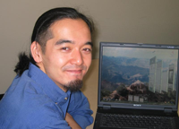
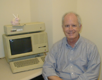
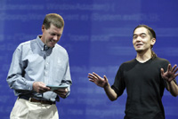
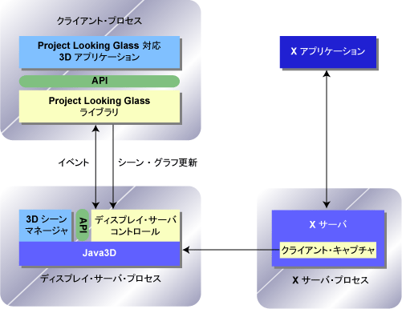

Java ベースの次世代デスクトップ環境
米 Sun Microsystems
ソフトウェア CTO オフィス，先進開発グループ Project Looking Glass リードエンジニア
川原 英哉
初出: Software Design 2004 年 10 月号
過去 20 年来本質的に進化していない GUI の革新に挑戦する，次世代 Linux デスクトップ環境を目指したオープンソースプロジェクト『Project Looking Glass』に関して，その発案者でありプロジェクトリードである川原が，自らの言葉で語ります． 初回は『基礎編』と題して，プロジェクトの背景やそのシステム設計思想の解説を，次回の『実践編』では，パッケージの入手やインストール方法，また実際のプログラミングについて解説します．
その狙うところ，経緯等を，ちょっとした裏話を含めご紹介致します． とりあえず，まずはモノを覗いてみたいという方は，オープンソースのページ (https://lg3d.dev.java.net/) や，古いバージョンですが，スクリーンショットのページ (http://wwws.sun.com/software/looking_glass/details.html)， ムービークリップ (http://wwws.sun.com/software/looking_glass/demo.html，『low bandwidth』か『medium bandwidth』を選んで最初の 2 分を飛ばしてください)をチェックしてみてください．
|  |
| 写真 1 Looking Glass 開発者， 川原英哉氏 |
|---|
ちょうど 20 年前の '84 年，コンピュータ業界で歴史的な出来事がありました． 商用で初めて成功した GUI を搭載したコンピュータ，Apple Macintosh 128K が発売されたのです． 初めてて見る WIMP（Window，Icon，Menu，Pointing device）ベースの GUI に心ときめいたのを今でも覚えています． そのマシンスペックは，16 ビットプロセッサである Motorola MC68000 を 8MHz で動かし，搭載 RAM は 128KB でした．
20 年後の今日，マシンスペックは『ギガ』の時代を謳歌しています． 今では，幼い子供たちが，一昔前ではスーパーコンピュータでも動かなかったような 3D ビジュアライゼーションを駆使したゲームで遊ぶような時代になりました． そんな今でも，不思議と変わらないものの 1 つが，この 20 年前から親しんできた WIMP ベースの 2 次元 (2D) GUI です． これだけ長い間，本質的な点で進化していません． そろそろオーバーホールの時期では，と誰もが思うところではないでしょうか． Project Looking Glass (以下LG3D) は，まさにそれを狙っています． 次世代 Linux/Solaris デスクトップを目指し，2D GUI のオーバーホールを非常に今日的な手法で実現しようとしています．
本プロジェクトでは，2 種類の『殻』を打ち破ろうと画策しています． 1 つ目は，現在のハードウェアスペックを活用して古い GUI の殻をやぶり，それを進化させること． 2 つ目は，その進化を，ごく一部の限られた人の手で行う従来のアプローチではなく，誰でもアイデアを出し合えるオープンソースという手法で達成しようとすることです． ちょっと大仕事です． そこで，読者の方々に興味を持っていただいて，(少々大げさですが) この GUI の歴史を変える活動にぜひとも参加していただきたいと願いつつ本編を書いています。
LG3D は個人の趣味から始まりました． 筆者は米 Sun に勤務するエンジニアです． 2 年ほど前，ふとしたきっかけで Java 3D に触れる機会があり，その描画速度の速さにある種の衝撃を覚えました． ここ数年間のサーバ側での利用で，Java の実装が大いに鍛えられたことを改めて実感しました． 加えて，今日のグラフィクスカードの性能の向上も再認識しました． そこで冒頭でも触れた疑問が生じるわけです．なぜ GUI は進化していないんだろう，と．
どう考えても，近い将来 GUI に 3D の要素が入ってくることは避けられないと感じました． しかしながら，なぜその方向に進んでいる気配が今ひとつ感じられないのか． そこで，3D GUI に関してウェブで調査してみました． すると，既に数多くの 3D GUI が提案されています． しかし，その中には私にはピンとくるものがありませんでした． そこで次の疑問がわいてくるのです． なぜこれらにピンをこないんだろう，と．
その疑問に対する回答のヒントは突然浮かんできました． 多くの既存のアプローチは，デスクトップをバーチャルリアリティのような 3D の世界に持ち込もうとしている． これは，一見派手ですが，使い勝手に問題がでてきます． そこで逆に，現状の 2D デスクトップをベースにして，3D の要素を要所要所に組み込んでいくというアプローチはどうだろう? (我々はこれを『2.5 次元デスクトップ』アプローチと呼んでいます)． その時，たまたま日常使っているラップトップ PC を落として壊してしまいました． 3D アクセラレータ付きの新しいラップトップを購入する絶好の言い訳ができました ;-)
新しいラップトップを購入すると同時に，コンピュータギークな日々が始まりました． 帰宅後と週末の大部分は開発に充てました． 人付き合いの悪い変人状態を 1 年ほど続け，ようやく人様にお見せできるようなモノが出来上がったのが，昨年の 7 月中旬でした．
それ以降，プロジェクトは，まさにシリコンバレー独特の展開を見せます． 折角デモを作ったので，Sun 社内のデスクトップ部門の知り合い達に見てもらうために簡単なミーティングを設定してもらったのですが，そこにひょっこり当時デスクトップ部門の副社長であった Curtis Sasaki が顔を出します． 彼はデモを甚く気に入ってくれ，翌日には，当時ソフトウェア部門の執行副社長であった Jonathan Schwartz (現 Sun 社長) へのデモを設定してしまいます．
Jonathan はデモを見るや否や，『数週間後の LinuxWorld で見せるべきだ』と言います． 発表の前日にプロジェクト名が決まり，同じ頃，Sun ソフトウェア部門の先進開発グループ内で本プロジェクトを正式に推進するための調整が進み，現在に至っています．
Sun は今でこそ大きな企業になりましたが，その動きは極めて軽い． スタートアップの頃の精神を維持しています． 技術革新のネタには極めて貪欲です． 副社長が一般のエンジニアのミーティングに顔を出したり，ネタを見つけたら強引にプロジェクトにしてしまう強力なリーダシップが存在します． これが，日本企業が協力/競争していかなければならないシリコンバレー企業の生態です．
|  |
| 写真 2 Frank Ludolph 氏 とLisa |
|---|
もう一点，本プロジェクトで感激したことがあります． ユーザインタフェース設計のエンジニアとして，Frank Ludolph という人が参加していますが，実は彼は，元 Apple で Lisa の開発に携わった人物です (写真 2)． Lisa といえば Macintosh の前身で，Apple 最初の伝説の GUI マシンです． そのデスクトップの設計/実装の中心となったエンジニアは 2 人いたのですが，彼はそのうちの一人です．
そんなエンジニアと一緒に WIMP を乗り越える次世代技術を追求できることに何か不思議な縁を感じるとともに，運の良さをかみ締めています． 米国企業では，生涯第一線のエンジニアとしてキャリアパスをつめます． Frank は，過去 20 数年 GUI 設計に第一線で携わった人物． その蓄積は，一味もふた味も違いを出します． エンジニアの層が厚い．これが，シリコンバレー企業の強みの素の一つだと思います．
本プロジェクトは，そんなシリコンバレースタイルの波に乗りつつ，更にオープンソース化によってその勢いを増そうとしています．
LG3D はその設立当初からオープンソースにすることは大前提でした． 理由は主に 2 つあります．
1 つ目は，これを Linux の次世代デスクトップ技術としてコミュニティに貢献することが，長い目でみて良い戦略であることにメンバ全員が同意していたこと．
もちろん Sun 独自の技術として育てることを提案する人も社内にはいたのですが，デスクトップといった基盤技術を独自で進めても，折角伸び始めた Linux デスクトップの市場を細分化する結果になります． それでは Sun にとってもうれしくはない． Microsoft が Longhorn という強力な次世代デスクトップのプランを掲げるなか，我々としては，この技術をオープンソースにし，Linux を押す他社とできる限り協力して，Linux の競争力を引き上げることに貢献すべきだ，という意見で纏まっています．
|  |
| 写真 3 2004 JavaOne Conference での 川原氏とMcNealy 氏 |
|---|
| 写真 4 2004 JavaOne Conference 開催中， San Francisco の街にPLG のデモが映し出された |
もう一点は，先にも触れました，デスクトップの進化を，ごく一部の限られた人の手で行うのではなく，多くの人の意見を取り入れられるオープンソースという手法で達成しようとすることです．
3D デスクトップは新しい領域です． 非常に広大な可能性に満ちています． ということは，アイデアを振り絞って色々実験していかなくてはいけない． こういう状況で，閉ざされたグループによる開発というのは，うまく機能しないのではないかと考えています．
最初からオープンソースにすることを前提にプロジェクトは進んでいたのですが，問題は，どのライセンス形態を使うか，という点でした． 法務部をからめ，かなりの時間を議論に費やしました． この調整は最後の最後までもめました．
今年の JavaOne 初日の基調講演で，LG3D のオープンソースを延期する一コマがありましたが，実のところは，見落としていたライセンス関係の問題が直前に発覚したことが原因でした (講演では『開発が間に合わなかった』ということにしましたが ；)． この件，基調講演前日のリハーサルで知らされ，まったく寝耳に水でした． その後，マーケティング担当の副社長が Scott McNealy (会長) と交渉し，Scott の鶴の一声で，翌日の Scott の基調講演でオープンソース化を発表する運びになりました (写真 3)．
この一連のギクシャク，『オープンソース化を印象付ける効果的な方法』との評を一部で頂きましたが，実のところは，まったくの予定外の話だったのでした．
結局のところ，ライセンスは理想的な形で提供することができました． 基本的には GPL，ただし，X11 インテグレーションの部分は，将来，X server に組み込めるよう MIT ライセンス．
また，アプリケーション開発者がコードの公開を強制されることなく開発できるよう，コンパイル済みのバンドルは，BCL (Binary Code License) で提供しています． 実際，X11 インテグレーションの部分については，HP のエンジニアと協力して，X.Org の時期 X server に，拡張機能を組み込んでいます．
オープンソース化されたLG3Dプラットフォームは，実は昨年来デモでお見せしているモノとは全くの別物で，ゼロから書き直されたものです． 本節では，今までとはガラッと雰囲気をかえて，この新しい『開発者リリース (Developer'sRelease)』版の設計思想について，ちょっと深く説明していきます． 本邦初公開です．
古いバージョンは『コンセプト証明バージョン (Proof-of-concept Version)』と呼ばれおり，『どのような3D GUIが可能か』を証明/デモするために開発されました． しかしながら，その内部構造はキレイとは言えませんでした．
プロジェクトを進めるにあたり，コンセプト証明バージョンから学んだことを踏まえ，将来的な製品化を見据えて設計/実装しなおしたのが，新しく開発され，オープンソースになった開発者リリースです． コンセプト証明バージョンと同様，Linux を対象としています．
コンセプト証明バージョンが成功した鍵として我々が認識したのは，特に以下 の4点でした．
これらを踏まえ，開発者リリースの設計ゴールとして，以下の9点を目指しました．
上述の設計ゴールを満たすために，開発者リリースの設計とその実装では以下のアプローチを取りました．
それぞれの項目について，以下の各節でより詳しく説明していきます．
開発環境/言語としてはJavaを採用しました． ガーベッジコレクション他の言語機能のおかげでバグが混入しにくく，また豊富なライブラリも手伝って，開発効率が非常に高いことが採用の理由です． 昨今の Java の実行速度の改善も目覚しいものがあり，今後のPCの性能向上を考えると速度の面での不安は低いと考えました．
また，Java がもたらす生産性の高さは，3D GUI の可能性の探索を精力的に推進するために不可欠なものと考えます． しかしながら，全体のアーキテクチャが落ち着き次第，OpenOffice 等のネイティブアプリケーションとの連携を容易にするために，C++バインディングを提供していく予定です．
Java 3D は 1997 年に最初のバージョンがリリースされた，成熟した Java 向けの 3D 描画 APIで，プラットフォーム非依存な，高い品質でスケーラブルな 3D 描画を可能にします． Java 3D API は，3D 物体や環境の描画や挙動のコントロールをするための，高レベルなオブジェクト指向インターフェースを提供します．
非常に基本的な描画機能を提供する OpenGL に対し，Java 3D では，その API に，より高次な抽象表現であるシーングラフを採用しています． より部品化されたなシステムを構築するためには，このレベルの抽象化が適当であると考えました．
また，Java 3D はハードウェアアクセラレーションを最大限に活用するよう設計されています． これにより，3D GUIでありながらCPUにかける負担を大きく低減できました．
加えて，Java 3Dが蓄積した数多くの資産，プログラミング解説本やライブラリなどを流用できるという利点もあります． 特に我々が注目しているのは 3D モデルローダです．これについては次の節で説明します．
このように，LG3D の API は Java 3D 上に構築されているのですが，クライアント側の API に関しては，現在のことろ，Java 3D のサブセットを提供しています． 実装に困難のともなう機能 (例えば SharedGroup ノード) はサポートしていません．
また double を取り扱うメソッドも除外しています． こうして，クライアント側の API を簡略化することで，将来的に LG3D 対応の 3D アプリケーションを，PC より計算機資源の乏しい TV セットトップボックス等の環境で実行できる可能性を残そうとしています．
Maya などの 3D モデリングツールからの出力を読み込むモデルローダのサポートは，LG3D を成功させるための鍵の 1 つであると我々は考えています． 3D を駆使した豊かなインターフェースを実現するためには，ビジュアルデザイナをうまく開発工程に取り込むことが必至です．
この点において，Java 3D 上に構築されているという利点が大いに効いてきます． Java 3D 上では既に数多くのモデルローダが提供されれいるからです 注1．
LG3D では，これらモデルローダを LG3D 対応アプリケーションから利用するための枠組みを提供しています．
クライアント/サーバシーングラフは複数のプロセスが単一の仮想 3D 空間を共有することを可能にします． これにより，LG3D 対応の 3D アプリケーションを別プロセス (場合によっては別マシン) で稼動しつつ，それら複数のアプリケー ションが提供する 3D GUI を，ユーザが操作する単一の仮想3D空間に統合することが可能になります．
これは X Window System が提供するクライアント/サーバシステム 注2 に対応する機能です． 各マシンには通常 1 つのディスプレイサーバ (X サーバに相当) が走っており，全3Dクライアントと連携しつつ，3D 画面を構築します．
LG3D 対応の 3D アプリケーションを別プロセスで実行することにより，アプリケーション実行環境のクリーンな分離ができ，クライアントの挙動不審によるサーバへの悪影響を最小限に留める事ができます． これは，将来の製品化に耐えうる頑強なプラットフォームを構築する上で，避けることのできない要求事項でした．
クライアント-サーバ間の通信プロトコルの実装には，抽象化層を設けています． 現在の開発者リリースでは，簡便のためにRMIを通信に利用していますが，通信層の構成が固まり次第，Java に依存せず，また高効率な通信メカニズムに置き換えていく予定です．
『Behavior』とは Java 3D 用語で，アプリケーションがシーングラフを操作してアニメーション等を実現することを可能にする機能(シーングラフノード)です． 効率の良いアニメーションをサポートするため，Behavior をサーバ側で実行する仕組みを実装しました． これにより，Behavior がシーングラフを操作するたびにクライアント/サーバ間の通信を発生することを回避することができます．
この短所は，Behavior の実装がサーバ側に存在するため，アプリケーションが独自の Behavior (アニメーション) を組み込めない点にあります． この問題に対処するために，汎用の Behavior 群とそれらを組み合わせる仕組みをクライアント側 API で提供していく予定です (現時点では，簡単なもののみが提供されています)．
豊かなユーザフィードバックの実現とプラットフォームの部品化は，2 つの大きな目標でした． しかし，これら 2 つの要求は相反する面があります． 豊かなユーザフィードバック実現のためには，UI の状態変化に関し，多くの情報を受け渡す必要があります． これをメソッド呼び出しで行おうとすると，ソフト部品間の結合が密になりすぎ，部品化の柔軟性が低下します．
そこで本プロジェクトでは非同期の汎用イベントシステムを基盤技術として導入しました． これにより，疎に結合したソフト部品群の構築が可能になりました．
コンセプト証明バージョンのデモの成功の鍵の 1 つは，豊かで自然なユーザフィードバックでした． その実装でもっとも頻繁に実行される実行パスは，マウスからのイベントの受け取りからアニメーション実行の一連の流れです．
例としては，マウスが上にのったらボタンが大きくなる，というフィードバックがあげられます． 開発者リリースでは，この部分の部品化に特に注力しました． 『actoin』と呼ばれる抽象化層を，イベントを受け取りコードとアニメーションを行うコードの間に設け，それぞれの部品化を促進しました．
3D 空間の利点の 1 つはスクリーンの『深さ』を利用できることです． これにより，画面上にモノを表示する際の配置の自由度と表現力が格段に上がります． この利点を活用するために，柔軟で強力な 3D レイアウトマネジャを提供していく予定です． このレイアウトマネジャのフレームワークは，3D アプリケーションの開発の簡便化にも大いに役立っています．
たとえば，CDViewer サンプルアプリケーションのソースを覗いていただくと 注3，行数のあまりの少なさに驚かれるかもしれません．
現在の開発者リリースでは，AWT のレイアウトマネジャに類じた実装のみが提供されていますが，より強力な API に改善していくための議論が丁度はじまっています． 今後の展開にご期待ください．
LG3D では，3D ウィンドウマネジャをシーンマネジャと呼びます． というのも，典型的な LG3D 対応の 3D アプリケーションの UI は，ウィンドウのカタチに捕らわれない，自由な形状を持つからです．
シーンマネジャの設計は，今後の重点調査項目の 1 つです． 数多くの UI を試すために，シーンマネジャの部品化には特に配慮しています． また，従来のウィンドウマネジャからの移行を考慮した『2.5 次元』と，3D の可能性を存分に活用する『3 次元』の両タイプのシーンマネジャを同一の抽象化のもとにサポートできるよう設計されています．
現時点では，アプリケーションコンテナ 注4，バックグラウンド，カーソルモジュール，ライティングモジュール，タスクバーといった要素に部品化されています．
これは LG3D の最重要な特徴の 1 つです． 既存の 2D アプリケーションを 3D 空間への取り込みは，アプリケーションの描画面を読み込み，テクスチャに変換し，そのテクスチャを 3D 物体上に貼り付けることにより実現します．
アプリケーション自体には変更は必要ありません． LG3D では，これら一連の処理を行う部分をプラットフォーム非依存なインターフェースで分離し，実装の詳細を隠蔽しています． 現在のところ，X11 (Linux アプリケーション)対応の既存のアプリケーション統合機能のみが実装されています．
注1) ご興味のある方は，http://www.j3d.org/utilities/loaders.html を覗いてみてください．
注2)ここでいう『クライアント/サーバ』は，ネットワークで接続されたクラ イアントマシン，サーバマシンを意味しません． Linux な X Window System の世界では，多くの場合，クライアント，サーバ共に同一マシン上で走っているプロセスで，クライアントは (通常マシンに 1 つ走っている) サーバに対し描画を要求し，サーバは，複数のクライアントからの要求を受付け，描画処理をします． サーバはまたユーザからの入力を受付け，それを適切なクライアントに対して配信します．
注3) https://lg3d-demo-apps.dev.java.net/source/browse/lg3d-demo-apps/src/classes/org/jdesktop/lg3d/apps/cdviewer/CDViewer.java から、最新リビジョンの『表示』を選択してみてください．
注4) サーバ側技術の『アプリケーションコンテナ』とは関係はありません．
LG3D のシステム概要図を図 1 に示します． X11 向け既存アプリケーションのサポートを含んでいます． 無変更の X アプリケーションが 3D 空間で走るための鍵は，X サーバ内に実装された『X アプリケーションキャプチャー』機能です． これは，最近新たに X.Org の X サーバに導入された『Composite Extension』を利用しています 注5．
この機能を利用して，X サーバは既存 X アプリケーションの画面情報をキャプチャーし，LG3D ディスプレイサーバに送ります． ディスプレイサーバは 3D 空間の描画のすべてを請け負います． その実装には Java 3D を利用しています． アプリケーション画面は Java 3D のテクスチャに変換され，最終的にはディスプレイサーバにより描画されます．
LG3D 対応の 3D アプリケーションの開発には，Java で書かれた LG3D ライブラリを利用します． このライブラリは，ディスプレイサーバと通信し，アプリケーションの 3D GUI の構築やイベントの受け渡しを行うことにより，3D アプリケーションの動作を実現します．
シーンマネジャはディスプレイサーバプロセス内に存在します． ディスプレイサーバの要であるディスプレイサーバコントロールと連携しつつ，3D アプリケーションの描画やユーザとのインターラクションのポリシーを規定します．
前述の設計思想と併せてこの図を見ていただくと，LG3D の全体像が良く見えてくるのではないかと思います．
|  |
| 図 1 PLG のシステム概要図 |
|---|
注5) http://freedesktop.org/XOrg/XorgReleasePlan から X.Org のXサーバのリリースプランを見ることができます．
以上，LG3D の背景や経緯，また設計思想について，少々突っ込んだところまでご紹介致しました． 読者のみなさんの知的好奇心を少しでも刺激できたのであれば幸いです． 次回の『実践編』では，更に雰囲気を変えて，LG3D のパッケージのインストールや実際のプログラミングについて解説致します．
{kind=link}
{kind=link}
{kind=link}
{kind=link}